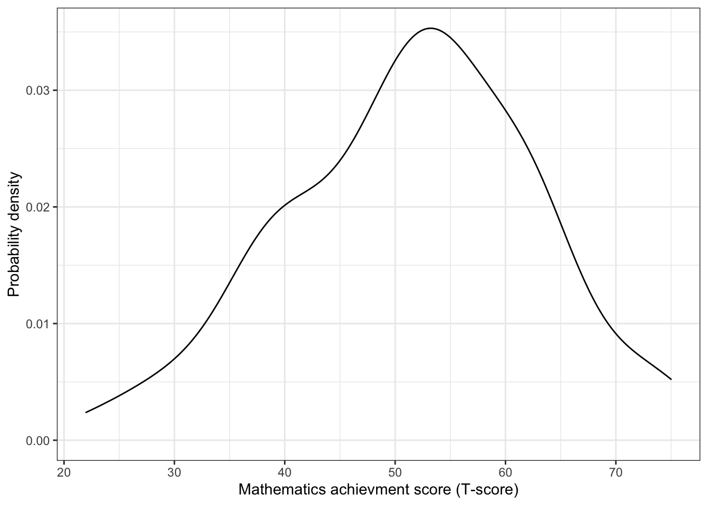

Exploration: Comparing Many Groups
Adapted from Zieffler et al. (2011)
This chapter assumes a working knowledge of dplyr and ggplot2 functionality to work with and plot data.
In the chapter Kernel Density Estimation the Vietnam Living Standards Survey (VLSS) was introduced. The survey was designed to provide an up-to-date source of data on households to be used in public policy formation, to assess current living standards, and to evaluate the impact of public programs. In this chapter, we will address the following research question:
Are there differences in the annual household per capita expenditures between the seven Vietnamese regions?
To address these research questions, we will again use the vlss-per-capita.csv to explore and compare the household expenditures across different demographic variables in the sample data.
Loading Packages and Importing the Data
To begin, we will load three packages that we will use in this analysis.
The data contains the household per capita expenditures for 5,999 households along with two demographic variables. We will import this data using the read_csv() function from the tidyverse package11.
# Import data
vlss = read_csv("https://raw.githubusercontent.com/zief0002/comparing-groups-draft/master/data/vlss-per-capita.csv")
head(vlss)## # A tibble: 6 x 3
## expend area region
## <dbl> <chr> <chr>
## 1 156. Rural Central Coast
## 2 109. Rural Central Coast
## 3 139. Rural Central Coast
## 4 124. Rural Central Coast
## 5 158. Rural Central Coast
## 6 136. Rural Central CoastGraphically Summarizing Conditional Distributions
To graphically examine the differences in household per capita expenditures across the seven regions, we will plot the KDE for the seven conditional distributions by mapping the fill aesthetic to the region attribute in the dataframe. This will create the seven KDEs in different colors in our plot. Because we are mapping an attribute in the data to an aesthetic, this is included inside the aes() function. The alpha=0.6 argument makes the density plots semi-transparent12 so that we can see both plots in the figure.
ggplot(data = vlss, aes(x = expend)) +
geom_density(aes(fill = region), alpha = 0.6) +
theme_bw() +
xlab("Household per capita expenditures (in U.S. dollars)") +
ylab("Probability density") +
scale_fill_discrete(name = "Region")Figure 1: Kernel density estimate for the distribution of household per capita expenditures conditioned on region.
Examining the plot produced in Figure 1, it is very difficult to interpret the differences in per capita household expenditures between the seven regions. The primary difficulty is that having many superimposed densities on the same plot, especially when those distributions overlap, makes it very difficult to make out group differences. There are a few potential solutions to this difficulty, including the use of facetting (panel plots) and mapping the conditioning attribute to the y-axis.
Facetting: Panel Plots
One solution to the difficulty of many superimposed densities is to plot the kernel density estimate for each region in a different facet or panel. All the facets are plotted using the same scale, so that all the graphs are comparable.
To facet by an attribute we will add the facet_wrap() layer to our plotting syntax. Within this layer, we specify the attribute we want to facet on by including this attribute name in the function and preceeding it with the tilde operator (~Attribute). The syntax below shows how to facet by region. The guides(fill=FALSE) layer removes the legend associated with the fill mapping as it is no longer needed to differentiate the seven regions.
ggplot(data = vlss, aes(x = expend)) +
geom_density(aes(fill = region), alpha = 0.6) +
theme_bw() +
xlab("Household per capita expenditures (in U.S. dollars)") +
ylab("Probability density") +
facet_wrap(~region) +
guides(fill = FALSE)Figure 3: Kernel density estimate for the distribution of household per capita expenditures facetted by region.
The panel plots in Figure 3 clearly show the density for each region. Note that all panels are plotted using the same axis scales which facilitates comparison. For example, it is clear that the peak of the South East region is the lowest of all the regions.
Mapping the Conditioning Attribute to the y-Axis
Another solution to the problem of many overlapping distributions is to map the conditioning attribute to the y-axis. The ggridges package includes the geom_density_ridges() layer for mapping a factor to the y-axis.
ggplot(data = vlss, aes(x = expend, y = region)) +
geom_density_ridges(aes(fill = region)) +
theme_bw() +
xlab("Household per capita expenditures (in U.S. dollars)") +
ylab("Region") +
guides(fill = FALSE)Figure 5: Kernel density estimate for the distribution of household per capita expenditures conditioned on region.
Figure 5 includes a plot of all seven kernel density estimates in the same panel. In this plot, the region attribute is mapped to the y-axis using the y= aesthetic. This allows the same sort of comparison that could be made in the facetted plot inFigure 3.
Numerically Summarizing the Data
The density plots in Figures 3 and 5 indicate that each distribution is positively skewed. Because of the extreme skewness and potential outliers in these distributions, we are inclined to use the more robust estimates for mean and variance. Recall that robust estimates are less affected by extreme scores than conventional estimates and, thus, are arguably more desirable summaries. The focus here is on the trimmed mean and Winsorized standard deviation introduced in the chapter Exploration: Comparing Two Groups. The syntax below shows how to compute these robust measures, along with the sample sizes, for each region.
## Conditional trimmed means, Windorized standard deviations, and sample sizes
vlss %>%
group_by(region) %>%
summarize(
M_t = mean(expend, trim = 0.2),
SD_W = winsor.sd(expend, trim = 0.2),
N = n()
)## # A tibble: 7 x 4
## region M_t SD_W N
## <chr> <dbl> <dbl> <int>
## 1 Central Coast 165. 59.2 754
## 2 Central Highlands 126. 44.8 368
## 3 Mekong Delta 162. 57.2 1112
## 4 North Coast 138. 42.5 708
## 5 Northern Uplands 127. 45.7 859
## 6 Red River Delta 177. 66.4 1175
## 7 South East 289. 120. 1023The numerical evidence shows there are regional differences in both the typical household per capita expenditure and in the variation within regions. Consistent with the plots, the trimmed mean for the South East region is the largest, and so is its Winsorized standard deviation. It is yet to be seen whether the sample differences suggests differences in the population.
Summarizing the Findings
When the information for several groups is presented, the statistical data should be summarized in either a table or graph, rather than in the text. This makes it easier for readers to take in and understand the information. In the narrative describing the results, reference is made to the table(s) and/or graph(s). The narrative of the manuscript is used to emphasize particular analyses that highlight interpretations, rather than to re-report all of the statistics in the text (American Psychological Association, 2019).
Regarding the results of the example, there are several issues that should be considered. Because of the asymmetry and outliers in the data, it is desirable to report the values for the trimmed mean and Winsorized standard deviations, rather than the conventional estimates. The sample size for each region is also reported to further inform comparisons. When reporting numerical values—both in text and tables, the APA manual recommends that they be “express[ed] to the number of decimal places that the precision of measurement justifies, and if possible, carry all comparable values to the same number of decimal places” (American Psychological Association, 2019, p. 137). For the example, rounding to the nearest U.S. dollar seems appropriate given that the original responses were recorded to the nearest dong, which is the standard Vietnamese currency. The decimal points in the data result from the conversion from Vietnamese dong to U.S. dollars.
As always, for the write-up, we will use substantive content knowledge to help summarize and interpret the statistical findings.
The graphical and statistical evidence shows there are sample differences in the household per capita expenditures between the regions. The numerical summaries obtained from the analysis are reported in Table 1. The South East region has the highest household typical per capita expenditure. The distribution of expenditures per capita in the South East region, which includes Ho Chi Minh City and the hinterland, is typically higher and more variable, compared with other regions. Also, more than 75% of the people sampled from the South East region are above the poverty line of $119.32. The distributions in the other six regions are fairly similar. It is worthwhile to note that in the two most impoverished regions, the Central Highlands and Northern Uplands, close to 50% of the households are below the poverty line.
| Region | \(M_t\) | \(SD_W\) | n |
|---|---|---|---|
| Central Coast | 165 | 59 | 754 |
| Central Highlands | 126 | 45 | 368 |
| Mekong Delta | 162 | 57 | 1112 |
| North Coast | 138 | 42 | 708 |
| Northern Uplands | 127 | 46 | 859 |
| Red River Delta | 177 | 66 | 1175 |
| South East | 289 | 120 | 1023 |
| a The mean was trimmed by 20%. The standard deviation was computed from a variance that was Winsorized by 20%. |
Examining Distributions Conditioned on Two Attributes
Now that regional differences in household per capita expenditures have been identified in the sample—and in Chapter 4 urban and rural differences were evident—there is interest in examining urban and rural differences within each region.
A facetted panel plot conditioned on two attributes can be created in a similar manner as presented earlier in this chapter. Rather than using the layer facet_wrap(), to condition on multiple attributes, we use instead use the layer facet_grid(). Within this layer we provide the attribute names of two conditioning attributes separate by the tilde operator (Attribute 1 ~ Attribute 2).
ggplot(data = vlss, aes(x = expend)) +
geom_density(aes(fill = region), alpha = 0.6) +
theme_bw() +
xlab("Household per capita expenditures (in U.S. dollars)") +
ylab("Probability density") +
facet_grid(region ~ area) +
guides(fill = FALSE)
Figure 8: Kernel density estimate for the distribution of household per capita expenditures facetted by region and area.
Notice that the panel plot produced puts the region attribute (the attribute prior to the tilde) in rows and the area attribute (the attribute after the tilde) in columns.
Numerical summaries conditioned on more than one attribute can be computed by including all grouping attributes in the group_by() function. The syntax below can be used to obtain the 20% trimmed means, the 20% Winsorized standard deviations, and the sample sizes for each of the 14 groups.
## Trimmed means, Windorized standard deviations, and sample sizes
## conditioned on region and area
vlss %>%
group_by(region, area) %>%
summarize(
M_t = mean(expend, trim = 0.2),
SD_W = winsor.sd(expend, trim = 0.2),
N = n()
)## # A tibble: 13 x 5
## # Groups: region [7]
## region area M_t SD_W N
## <chr> <chr> <dbl> <dbl> <int>
## 1 Central Coast Rural 138. 42.5 502
## 2 Central Coast Urban 243. 91.9 252
## 3 Central Highlands Rural 126. 44.8 368
## 4 Mekong Delta Rural 143. 40.1 830
## 5 Mekong Delta Urban 262. 104. 282
## 6 North Coast Rural 128. 34.5 600
## 7 North Coast Urban 242. 96.9 108
## 8 Northern Uplands Rural 109. 29.5 672
## 9 Northern Uplands Urban 215. 51.6 187
## 10 Red River Delta Rural 145. 36.8 783
## 11 Red River Delta Urban 291. 107. 392
## 12 South East Rural 208. 65.6 514
## 13 South East Urban 406. 150. 509Notice that there is no output for the urban area of the Central Highlands region. This is because there are no rows in the data corresponding to urban households in the Central Highlands region. This can also be seen in Figure 8 in which there is no plot for urban households in this region. All the summaries can again be placed in a table for publication as shown in Table 2.
| Region | \(M_t\) | \(SD_W\) | n | \(M_t\) | \(SD_W\) | n |
|---|---|---|---|---|---|---|
| Central Coast | 138 | 43 | 502 | 243.153355263158 | 92 | 252 |
| Central Highlands | 126 | 45 | 368 | — | — | — |
| Mekong Delta | 143 | 40 | 830 | 262 | 104 | 282 |
| North Coast | 128 | 35 | 600 | 242 | 97 | 108 |
| Northern Uplands | 109 | 29 | 672 | 215 | 52 | 187 |
| Red River Delta | 145 | 37 | 783 | 291 | 107 | 392 |
| South East | 208 | 66 | 514 | 406 | 150 | 509 |
| a The mean was trimmed by 20%. The standard deviation was computed from a variance that was Winsorized by 20%. |
A write-up of the complete results might be as follows.
Given the economic differences that were found in both region and area, a decision was made to examine the differences between rural and urban areas within each region. Table 2 shows that in Vietnam, rural households have approximately half the per capita expenditures on average as do urban households. While there is much more variation in the wealth of these urban households, it is apparent that the rural households in every region are not only poorer on average, but also show very little variability.
From examining both the graphical and statistical evidence, there are sample differences in the household per capita expenditures between the regions. The South East region has the highest household per capita expenditure. The distribution of expenditures per capita in the South East region, which includes Ho Chi Minh City and the hinterland, is typically higher and more variable, compared with other regions. Also, more than 75% of the people sampled from the South East region are above the poverty line of $119. The distributions in the other six regions are fairly similar. It is worthwhile to note that in the two most impoverished regions, the Central Highlands and Northern Uplands, close to 50% of the households are below the poverty line.
Extension: Conditioning on Continuous Variables
In Exploration: Comparing Two Groups and also earlier in this chapter, we examined distributions conditioning on one or more variables. In all of the examples, the conditioning variables were categorical in nature. It is also possible to condition the response variable on factors that are ordinal in nature, or even on continuous variables. To illustrate this type of conditioning, another data set is considered. The data set is from a study that had the primary research question of whether there are differences in mathematics achievement for students who spend differing amounts of time on mathematics homework.
During the spring of 1988, the National Center for Education Statistics initiated a longitudinal study—the National Educational Longitudinal Study (NELS)—of eighth-grade students attending 1052 high schools across the 50 states and the District of Columbia. These students, who constituted a nationally representative sample, were surveyed on a variety of topics related to education, and also given achievement tests in four content areas—reading, social studies, mathematics, and science. Samples of the original 27,394 participants were also surveyed and assessed again in 1990, 1992, 1994, and 2000.13 The data in nels.csv is a pared down sample from the original 1988 data that consists of two variables—the average amount of time (in hours) spent on mathematics homework per week, and the mathematics achievement score for 100 students. The achievement scores are T-scores, which are based on a transformation resulting in a distribution with a mean of 50 and a standard deviation of 10.
After the data are imported, the marginal distribution of mathematics achievement is examined (syntax below). The density plot of the marginal distribution of mathematics achievement indicates the estimated density for the mathematics achievement scores is roughly symmetric. As expected for T-scores, the typical value is around 50. There is also variation in the scores.
# Import data
nels = read_csv("https://raw.githubusercontent.com/zief0002/comparing-groups-draft/master/data/nels.csv")
head(nels)## # A tibble: 6 x 2
## homework math_achievement
## <dbl> <dbl>
## 1 4 53
## 2 0 56
## 3 3 37
## 4 4 55
## 5 7 50
## 6 0 36# Marginal distribution of achievement scores
ggplot(data = nels, aes(x = math_achievement)) +
geom_density() +
theme_bw() +
xlab("Mathematics achievment score (T-score)") +
ylab("Probability density")
The distributions of mathematics achievement conditioned on the time spent on mathematics homework are also examined. Here we display these conditional distributions using box-and-whiskers plots. The conditioning attribute needs to be categorical to use geom_boxplot(), so we coerce it into a factor using the factor() function. The optional arguments fill= and width= are included to set the box’s fill color and width (thinner than default), respectively. Figure 7 shows the resulting plot. Numerical summaries for the conditional distributions are also computed.
# Side-by-side boxplots
ggplot(data = nels, aes(x = factor(homework), y = math_achievement)) +
geom_boxplot(fill = "skyblue", width = 0.2) +
theme_bw() +
xlab("Mathematics achievment score (T-score)") +
ylab("Average time spent on mathematics homework per week (in hours)")Figure 7: The distribution of mathematics achievement conditioned on average weekly time spent on mathematics homework. Achievement is reported as a T-score which are transformed scores having a mean of 50 and a standard deviation of 10.
# Numerical summaries
nels %>%
group_by(homework) %>%
summarize(
M = mean(math_achievement),
SD = sd(math_achievement),
N = n()
)## # A tibble: 9 x 4
## homework M SD N
## <dbl> <dbl> <dbl> <int>
## 1 0 41.6 11.2 19
## 2 1 53 7.83 19
## 3 2 51.1 10.5 25
## 4 3 56.6 12.7 16
## 5 4 56.1 8.94 11
## 6 5 56.3 10.7 6
## 7 6 48.5 2.12 2
## 8 7 50 NA 1
## 9 10 59 NA 1The side-by-side box-and-whiskers plots, shown in Figure 7, and the numerical summaries suggest that the conditional distributions of mathematics achievement are not extremely asymmetric; and all have roughly the same amount of within-group variation. We also see evidence of differences in mathematics achievement for the differing amounts of time spent on mathematics homework. The side-by-side box-and-whiskers plots show that the typical mathematics achievement score is increasing across the conditional distributions. They also show that the variation in mathematics achievement scores are roughly similar for the differing amounts of time spent on mathematics homework. The small amount of variation shown in the box-and-whiskers plots on the right-hand side of the plot (i.e., at the values of 6, 7, and 10) is likely an artifact of the extremely small sample sizes at those values.
Scatterplots of the Conditional Distributions
When the conditioning variable is continuous or is measuring a trait that is assumed to be continuous, it can be useful to use a scatterplot to examine the conditional distributions. The geom_point() layer can be used to produce a scatterplot. The syntax below creates a scatterplot of the mathematics achievement scores versus time spent on homework.
# Side-by-side boxplots
ggplot(data = nels, aes(x = factor(homework), y = math_achievement)) +
geom_point(size = 3) +
theme_bw() +
xlab("Mathematics achievment score (T-score)") +
ylab("Average time spent on mathematics homework per week (in hours)")
Figure 9: Scatterplot showing the distribution of mathematics achievement conditioned on average weekly time spent on mathematics homework.
Figure 9 shows a scatterplot of the relationship between time spent on mathematics homework and mathematics achievement scores for the sample of 100 eighth-grade students. Each observation (point) in the scatterplot is defined by a student’s achievement score and hours of homework. The scatterplot shows the same overall increasing trend in typical mathematics achievement scores as the side-by-side box-and-whiskers plots in Figure 7. It also shows the same pattern of variation in the conditional distributions.
Figure 10 shows the same scatterplot with side-by-side boxplots superimposed on the plot. This is easily accomplished by including both the geom_boxplot() layer and the geom_point() layer in the same plot syntax. The syntax below illustrates the produces the plot displayed in Figure 10. Superimposing side-by-side boxplots on the scatterplot is a nice way to display smaller data sets. The side-by-side boxplots allow the examination of each conditional distribution, while the scatterplot still shows the individual cases.
# Side-by-side boxplots
ggplot(data = nels, aes(x = factor(homework), y = math_achievement)) +
geom_boxplot(fill = "skyblue", width = 0.2) +
geom_point(size = 3) +
theme_bw() +
xlab("Mathematics achievment score (T-score)") +
ylab("Average time spent on mathematics homework per week (in hours)")Figure 10: Scatterplot and side-by-side box-and-whiskers plots showing the distribution of mathematics achievement conditioned on average weekly time spent on mathematics homework.
Further Reading
Panel plots were introduced by Cleveland (1993) as a part of a data visualization framework called trellis graphics that was developed at Bell Labs.14 Sarkar (2008) provides an excellent starting point for the reader interested in learning more about this package. For more information on the use and interpretations of scatterplots, any good regression book would suffice (e.g., Cook & Weisberg, 1999; Mosteller & Tukey, 1977; Sheather, 2009).
References
American Psychological Association. (2019). Publication manual of the American Psychological Association (7th ed.). Author.
Cleveland, W. S. (1993). Visualizing data. Hobart Press.
Cook, R. D., & Weisberg, S. (1999). Applied regression including computing and graphics. Wiley.
Mosteller, F., & Tukey, J. W. (1977). Data analysis and regression. Addison-Wesley.
Sarkar, D. (2008). Lattice: Multivariate data visualization with R. Springer.
Sheather, S. J. (2009). A modern approach to regression with R. Springer.
Zieffler, A. S., Harring, J. R., & Long, J. D. (2011). Comparing groups: Randomization and bootstrap methods using R. Wiley.
The
read_csv()function is technically included in the readr package which is included in the tidyverse package.↩Any value from 0–1 can be used, where
alpha=0is fully transparent andalpha=1is fully opaque.↩For more information on the methodology used in the NELS study, visit the official website: .↩
An older implementation of the trellis graphics framework can be found in the lattice package.↩